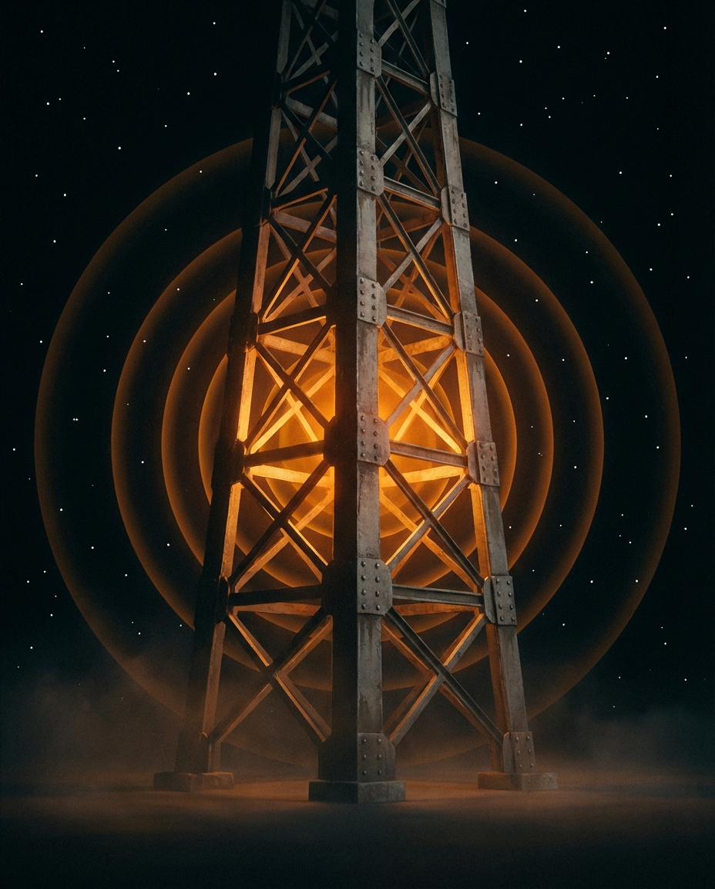
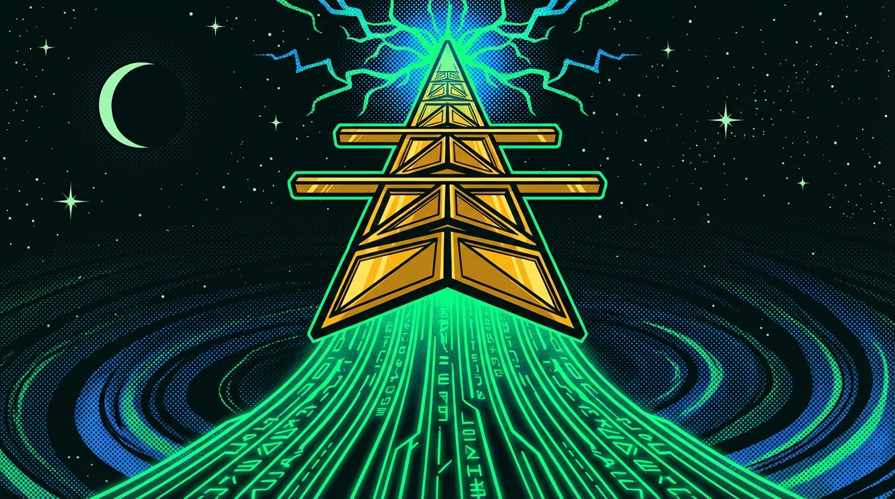

Phone home with your data
No telemetry, no analytics pipeline, no usage events. uplnk never opens a network connection you didn't initiate.

OLLAMA · VLLM · LLAMA.CPP · LM STUDIO
Open-source TUI coding assistant for Ollama, LM Studio, vLLM, and any OpenAI-compatible server. Your tokens never leave your hardware. No cloud routing, no subscription, no data you don't control.
┌────────────────────────────────────────────────────────────────────────────┐
│ ┌─────────────────────────────┐ local code ┌──────────────────────┐ │
│ │ ▐█▌ UPLNK v1.1.0 │ ● llama3.2 │ Ollama (local) │ │
│ │ cwd ~/dev/myproject │ │ localhost:11434 │ │
│ └─────────────────────────────┘ └──────────────────────┘ │
└────────────────────────────────────────────────────────────────────────────┘
┌────────────────────────────────────────────────────────────────────────────┐
│ ● ◆ 0.8k ▓▓▒░░ 18% new conversation Ctrl+C quit │
└────────────────────────────────────────────────────────────────────────────┘
╭────────────────────────────────────────────────────────────────────────────╮
│ ❯ │
╰────────────────────────────────────────────────────────────────────────────╯

The situation
It's 11pm. You're debugging a production issue. You paste your auth middleware into the chat window. The response is exactly what you needed. Then you remember: you just sent your session token schema to a vendor's inference server. You close the tab and figure it out yourself.
◆ With uplnk: same conversation. Same response quality. The inference runs on your machine. The tokens don't leave.
You installed Aider because it supports Ollama. It does — sort of. The streaming drops out halfway through a long response. The edit format confuses the 8B model. You spend 20 minutes reading error output instead of writing code. You paste the function into Jan.ai and keep going.
◆ With uplnk: the streaming layer handles local model latency. When a response stalls, you see why. When it succeeds, the output is syntax-highlighted and ready to use.
Your manager asks you to stop using Cursor for work. The security review found that source code is transmitted to third-party inference servers during normal use. You need an alternative that passes infosec review — and doesn't require explaining to the CISO what an ngrok tunnel is.
◆ With uplnk: local inference, no network egress, MIT-licensed source you can audit. The answer to your security team is two words: "runs locally."
Capabilities
Runs inside your existing terminal. No browser, no Electron, no separate window stealing focus.
Talk to Ollama, vLLM, LM Studio, or any OpenAI-compatible server. Your models, your rules, your hardware.
Built for local model latency. A 33ms render-flush buffer keeps the UI smooth even when a hot local model pushes 60+ tokens/sec — tokens accumulate in a ref, not state, so React never thrashes.
Paste a file or enable local embeddings to index your whole project. uplnk chunks and stores vectors in SQLite — cosine-similarity search runs entirely on your machine. Opt-in — requires embedding endpoint
Every conversation saved locally at ~/.uplnk/db.sqlite. Portable, queryable, forever yours.
No API keys sent to our servers. No subscription required. Ever. Optional anonymous telemetry exists but is off by default and the transport isn't wired — nothing leaves your machine today.
Get started in 60 seconds
# Install uplnk globally
$ npm install -g uplnk
# Connect your local LLM
$ uplnk config --provider ollama --url http://localhost:11434
# Start coding with AI
$ uplnk
◆ uplnk v0.1.0 — Connected: Ollama (llama3:8b) ●
Requires Node.js 20+ and a running Ollama/vLLM instance. Get Ollama →
Our commitments
Features are easy to list. Refusing certain things takes intention. Here's what we've deliberately left out.
No telemetry, no analytics pipeline, no usage events. uplnk never opens a network connection you didn't initiate.
MIT licensed. Install once, use forever. No account, no trial, no "free tier" that expires when you rely on it.
If it speaks OpenAI-compatible API, uplnk talks to it. You pick the model, the hardware, and the server. We bring the tooling.
uplnk is a TUI. It lives in your terminal, next to your editor, where you already work. No context-switch tax.
Every line is on GitHub. You can read exactly what uplnk does before you run it — and fork it if we ever get it wrong.
Cloud providers (Anthropic, OpenAI) are supported as explicit opt-in. Local inference is the default — not an afterthought bolted on later.
THESE ARE COMMITMENTS, NOT MARKETING. IF WE BREAK ONE, OPEN AN ISSUE.
Open source. MIT licensed. No tracking. No paywalls. Install it once and it's yours — no subscription, no vendor lock-in, no account required.